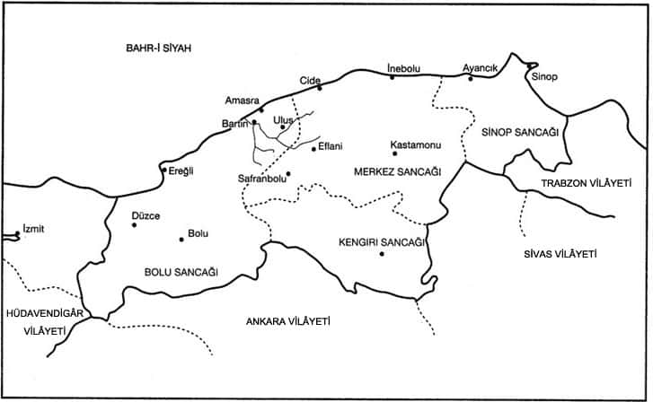

19. yüzyılda Türkiye limanlarının bazıları önemli değişimlere uğradı. Bu değişim daha çok, bu limanların hinterlandındaki (art-ülke) tarımsal faaliyetlerin ve zenaat üretiminin Avrupa endüstri bölgesinin ihtiyaçlarına yönelen bir yapısal değişmeye girmesinden ileri geliyordu. Tarımsal faaliyetin konusu olan ürün çeşitleri ve bunun yanı başında kentlerdeki geleneksel el zenaatı, bu dış ticaretin taleplerine cevap verecek bir çeşitliliğe ve üretim yapısına geçmekteydi. Bu limanların başında Selanik, İzmir, Beyrut gibi, özellikle ön planda Batı pazarlarıyla bütünleşen liman şehirleri ve onların hinterlandını saymak mümkündür. Bu bölgelerdeki değişmeler çok daha çarpıcı nitelikteydi ve bölgenin toplayıcı merkezi olan liman şehirleri de giderek yarı-metropoliten özelliklere sahip olmaktaydı. 19. yüzyılda İzmir bu tip bir metropol olarak önemli bir örnektir. Sözü geçen örnek son yıllarda Prof. Mübeccel Kıray tarafından bu gelişmeyi yorumlayan çalışma ile ele alınmıştır.[177]

19. Yüzyılda Kastamonu Vilâyeti
Ele aldığımız Kastamonu vilâyeti ise, 19. yüzyılda gerek limanlarının faaliyet hacmi gerekse hinterlanddaki tarımsal ve tarım dışı faaliyetlerin yapısı bakımından benzer bir değişiklik gösteriyordu. Ancak 19. yüzyılda Kastamonu vilâyetindeki bu yapısal değişmeler, yukarıda saydığımız bölgelerinkine kıyasla ikincil bir öneme sahiptir. Buna rağmen, bölgenin toplayıcı ve dış dünyayla bağıntı rolüne sahip merkezlerinde bir değişme meydana gelmiş ve bazı limanların (daha doğrusu iskele) önemini kaybetmesine karşın, diğerlerinin başat rolünde bir artış görülmüştür. Örneğin, Sinop limanı bu çağda, biraz da coğrafî yapısı nedeniyle vilâyetin merkez limanı olma niteliğini sürdürürken, Safranbolu-Bartın-Amasra ekseni de bölgede gittikçe önem kazanan bir toplayıcı bölge haline gelmiştir.
Safranbolu-Bartın-Amasra ekseninin ticarî öneminin artışı, her şeyden önce bölgenin artık salt İstanbul ile değil, Karadeniz kuzeyindeki Çarlık Rusyası’nın liman merkezleriyle de ilişkilerinin artmasına bağlıdır. Böylece, bölgenin ürünleri dış pazarlara yönelmeye başlamıştır. Nitekim, daha 19. yüzyıl başlarında bile Sinop ve İnebolu iskeleleri, donanma için gerekli kerestenin ve İstanbul’un ihtiyacı olan bazı ürünlerin sevk edildiği merkezlerdi. Yüzyılın başına ait Fransız ticaret raporları, bölgedeki kerestenin tamamen Osmanlı donanmasına tahsis edildiğini bildiriyordu. Dönem boyunca Sinop ve İnebolu, Karadeniz’deki beynelmilel ticaret yönünden önemi olan merkezler değildi.[178]
19. yüzyılda, bölgede gerek zenaatlarda (lonca ekonomisi) gerekse tarımsal faaliyetlerde gözlenen yapısal değişmeler belirli merkezlerde bir servet birikimine de sebep oldu. Bugün hayranlığımızı çeken Safranbolu kasabasının konutları veya 100 yıldır vilâyet merkezinden bile daha zengin bir hayata sahip olan Bartın kasabası bu değişimin kanıtıdır. Bu nedenle, bu değişimin meydana geldiği Safranbolu-Bartın-Amasra ekseni incelenmeye değerdir. Bu inceleme için Kastamonu vilâyetinin 19. yüzyıldaki idarî taksimatını ve bölgesel organizasyonunu kısaca gözden geçirelim.
Kastamonu vilâyeti, 19. yüzyılın ikinci yarısında şu sancaklardan meydana geliyordu: Kastamonu (merkez liva), Sinop sancağı, Bolu sancağı, Kengırı (Çankırı) sancağı... Buna göre bizim inceleyeceğimiz ve bugün Zonguldak vilâyetine dahil olan Safranbolu (Zağferanbolu) Kastamonu sancağına, Bartın ise Bolu sancağına bağlı iki kazaydı; Amasra ise, Bartın’a bağlı bir nahiye idi.
Üretim yapısında yeni değişmeler görülen Bartın ve Safranbolu kazalarının idarî durumu ise şöyleydi: Safranbolu’ya Ulus, Eflani ve Aktaş nahiyeleri bağlı idi; Bartın’a ise, Çarşamba ve Amasra nahiyeleri bağlıydı. Kaza dahilindeki idarî organ ve kurumlar şunlardı:
Safranbolu’da 1286/1869 yılında kaymakamın başkanlığında 3 müslim ve 1 gayrimüslim olmak üzere dört üyeden kurulu bir “Meclis-i İdare” vardır. Belediye meclisi henüz teşekkül etmemişti.[179] Bu yıllarda Kastamonu sancağına bağlı İnebolu ve Araç gibi diğer iki kaza, idarî organlar bakımından daha mükemmel bir idarî yapıya sahiptir. 1293/1877 yılında ise Safranbolu kazasındaki gelişmenin sonucu, idarî yapıda da bir mükemmelleşme göze çarpmaktadır. Kazanın ekonomik gelişmesi sonucu, “Menâfi-i Umûmiye Sandığı”nın sermayesi de 82.875 kuruşa ulaşmıştır. Aynı yıl içerisinde, kazanın 3 nahiye ve 82 köy ve 10 mahalleden müteşekkil olduğunu öğreniyoruz. 1877 yılı istatistiklerine göre[180] , kaza içinde 15 talebesi ve 3 muallimi bulunan bir rüşdiye, telgrafhane, civarda zührevi hastalık yaygın olduğundan, Frengi ve Gureba Hastahanesi gibi modernleşmenin getirdiği bazı tesisler bulunmaktadır. Gene kazada, Tanzimat’tan ve Islâhat Fermanı’ndan sonra birçok yerlerde görüldüğü gibi, gayrimüslim cemaatler kendilerine ait üç okul kurmuşlardır. Kazanın bütün nüfusu 1293/1877’de 1 Ermeni, 335 Rum ve 6825 İslâm hanesi olarak veriliyor. Bu kabaca 25.200 civarında bir nüfusa eşittir.[181] 1901’de ise, aynı hesapla bu nüfus 3.300’ü Hıristiyan, 22.700’ü İslâm olmak üzere 26.000’e ulaşmıştır. 19. yüzyıl sonunda kazada mevcut olan 12 hangâh ve 11 han, 10 hamam ve 911 dükkân; Safranbolu’nun, civarı için bir toplayıcı ticaret merkezi rolünü yüklendiğini göstermektedir. Gene tahıl üretimi ve dericiliğin geliştiği kazada 261 değirmen ve 84 debbağhane bulunmaktadır.
Safranbolu’da, bu dönemde çeltik ve tahıl ziraatı ve bağcılık yapılmaktadır. Bu ürünlerle pazar için üretime geçildiği görülüyor. Aşâr iltizamı ile yaşayan, mahallî ölçüler içinde varlıklı bir sınıf türemiştir. Safranbolu, 16.-17. yüzyıllardaki gibi elan Anadolu’nun önemli bir ticarî karayolu üzerinde idi. 19. yüzyıl sonlarında İstanbul’dan Adapazarı’na kadar uzanan demiryolu ile bu yörelerin bazı ürünlerinin İstanbul’a sevki daha da kolaylaşmıştı. Diğer yandan Kastamonu vilâyeti, önemli hayvancılık merkezlerinden idi. Özellikle Eflani, bugünkü gibi önemli bir hayvan pazarı idi. Bunun Safranbolu’daki dericilik zenaatini besleyen önemli bir kaynak olduğu anlaşılmaktadır. Gerek Osmanlı ülkesinde gerekse Batı Avrupa pazarlarında, Safranbolu’da üretilen ham deri, işlenişindeki elverişlilik, kalite ve ucuzluğu dolayısıyla ihtiyaç duyulan ve aranan bir madde idi. Safranbolu merkezindeki imalâthaneler, ağır endüstriye geçen ülkelerdeki el emeğinin pahalılığı vs. nedenlerle, karşılanamayacak bir ihtiyaca cevap veriyorlardı.
Safranbolu’nun, kara yolu ile doğrudan İstanbul ve deniz yolundan da (Bartın vasıtasıyla) Karadeniz limanlarıyla gerçekleşen bağlantısı; bunun yanında monokültürel tarıma geçiş ve dericiliğin geniş pazarlara yönelmesi, şehirde önceki devirlere göre varlıklı bir hayatın başlamasına neden olmuştur. 19. yüzyılın birçok şehir ve kasabasında kolay rastlanamayan bu nisbî refahı, Safranbolu’nun Türk konut mimarîsinin çarpıcı özellikteki sayısız örneğine sahip olması da göstermektedir. Safranbolu’nun dönem içindeki mekân dağılımı, faaliyetlerin durumu ve nihayet şehrin günümüz yapısal şartları içindeki değişimi çarpıcı bir durumu göstermektedir. Bu konuda Tansı Şenyapılı ve Sevgi Aktüre’nin araştırması ilginç ve etraflı bir çalışmadır.[182]
Eksenin merkezini meydana getiren Bartın ise, o devrin araçlarıyla Karadeniz’e Bartın çayı üzerinden iki saat mesafededir.[183] Vilâyet içerisinde en işlek çarşılardan birine sahip olup, mavna ve sandallar Karadeniz’le ulaşımı sağlardı. Senede 4-5 yüz kantar halat imal ediliyor, kereste ticaret ve nakliyatı yapılıyordu.[184] Kazada 38 Rum, 17 Ermeni ve 19.107 İslâm nüfus vardı. Bartın’ın vergi gelirlerine baktığımızda, ekonomik durumun Kastamonu vilâyeti içinde olağanüstü bir seviyede olduğu anlaşılıyor. 1869 yılında kazanın ağnam rüsûmatı 46.800 kuruş, aşâr geliri 515.148 kuruş ve askeriye bedelatı 938 kuruşa çıkmıştır. Bu vergilerin toplamı 821.908 kuruş olup, aynı miktar tüm Sinop sancağında 233.182 kuruş; Kastamonu sancağında ise 236.462 kuruştur.[185] Dolayısıyla Bartın tek başına bölgenin en zengin merkezidir.
Kazanın idarî organları da teşekkül ve ihtisaslaşma bakımından göreli olarak daha mükemmel bir seviyededir. 1877 yılında kazada Ziraat Meclisi, Maârif Meclisi gibi ihtisas kuruluşları vardı. Amasra nahiyesinde de karantina memuru, maâdin-i hümâyûn komiseri gibi görevliler vardı. Bartın’ın 1877 yılında Menâfi-i Umûmiye Sandığı sermayesi 207.356 kuruşa ulaşmıştı. Bu miktar, Kastamonu’da 181.735 kuruş, Bolu’da ise sadece 64.316 kuruştur.[186] Şehirde 2 hocalı ve 40 talebeli bir rüşdiye ve Müderris İsmail Efendi’nin yönettiği 70 öğrencili bir medrese vardı.[187] Şehir, bölgenin kültürel merkezlerinden biriydi.
Bartın’ın nüfus hareketleri de ilginç bir durum göstermektedir ki, bu sosyo-ekonomik değişmenin bir sonucudur. 1877 yılında 9 mahalle ve 112 köyü bulunan Bartın’da 45 Ermeni, 85 Rum, 30 Kıbtî, 32.500 Müslüman nüfus vardı. Kaza nüfusu kısa zamanda iki misli artmıştır. 1901 yılında bu nüfusun iki misline ulaşması, ekonomik aktivite hacminin büyümesi dolayısıyla bir iç göç olayının varlığını doğrular niteliktedir.
Bartın’ın altyapısal tesisleri kadar kültür hayatını da etkileyen bu gelişmeler; a) şehrin doğrudan doğruya hinterlandı ile Karadeniz ulaşımı arasındaki, b) İstanbul’la ve hatta Çarlık Rusyası limanları ile olan ulaşımdaki, bağlantı rolüyle yakından ilgilidir. Dönem içinde Amasra’nın iktisadî durumu Necdet Sakaoğlu’nun, Bartın’ınki ise, Kemal Samancıoğlu’nun araştırmalarında diğer yönleriyle görülebilir.[188] Bu yazıda daha çok bu merkezlerin kendi içlerinde ve hinterlandlarıyla aralarında olan mekânsal bütünleşmeye değinilmek istenmiştir. 20. yüzyıldaki gerileme de, gene Karadeniz ticaretindeki rollerini kaybetmelerine ve Anadolu kıtasındaki demiryolu ve sonraları karayolu ulaşım ağının bu merkezlerin dışına kaymalarından ileri geliyor. Böylece sözü edilen iktisadî eksen eski önemini kaybetmiştir.